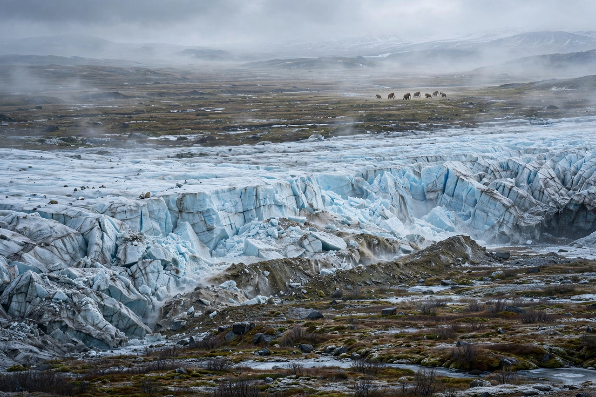

Ice age
From Wikipedia, the free encyclopedia

An ice age is a long period of reduction in the temperature of Earth's surface and atmosphere, resulting in the presence or expansion of continental and polar ice sheets and alpine glaciers. Earth is currently in the Quaternary glaciation (begun 2.58 million years ago), within which colder glacial periods — the last peaking about 20,000 years ago — alternate with warmer interglacials such as the present Holocene.
History of the concept
In the 1830s–40s Louis Agassiz and others established that erratic boulders and scratched bedrock across Europe proved a former great glaciation — a revolutionary claim. Five major ice ages are recognised in deep time, including the Huronian and the 'Snowball Earth' Cryogenian episodes, when ice may have reached the equator.
Causes
Glacial cycles of the last million years pace to Milankovitch cycles — variations in Earth's orbit and axial tilt redistributing sunlight — amplified by feedbacks from ice albedo and greenhouse gases. The deeper cooling into the Quaternary ice age is linked to falling CO₂, the closure of the Panama seaway and mountain uplift. Ice cores from Antarctica and Greenland now give an 800,000-year record of temperature and atmosphere locked in the ice.
The last glacial maximum
At the peak (~26,500–19,000 years ago), ice sheets up to 3–4 km thick covered Canada and northern Europe, sea level stood some 120 metres lower — joining Siberia to Alaska at Beringia and Britain to Europe — and mammoths, woolly rhinoceroses and human hunter-gatherers shared the cold steppes. Deglaciation drowned coastlines, filled the Great Lakes and set the stage for agriculture.